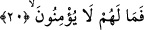
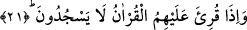

sonra geçmiş olur. Dolayısıyla burada aslında “ba’de ve an” kelimelerinin birlikte
kullanmaları doğrudur. Ayrıca “an” lafzı uzaklık ve aşmak anlamını ifâde eder. Böylece
‘an ba’de lafzına benzemiş olur. Dolayısıyla birisinin diğeri yerine kullanılması doğru
bir kullanım olur.
et-Te’vilâtü’n-Necmiyye’de bu âyet-i kerimeden şu işâretler çıkarılıyor: Allah burada
çeşitli riyazatlarla, sınıf sınıf mücahedelerle ve bir halden bir başka hale geçiş yaparak
Allah’a yönelen insan kalbine hitap ediliyor. Çeşitli hallere geçiş yapan insan kalbinin
her bir hâli, açlıktan, uykusuzluktan, susmaktan, uzletten vb. başka hallerden
kaynaklanan meşakkatte diğerine mutabıktır, uygundur.
20. Böyleyken onlar acaba neden îman etmezler?
Onların kıyamet günü halleri zikredildiği gibi olacağına göre “böyle iken onlar
acaba neden îman etmezler?” Mü’min olmadıkları takdirde onlar için hangi şey
vardır? Bir başka ifâdeyle îmanı destekleyen bunca delil varken onların îman etmesine
engel olan nedir?
Bu âyet-i kerimede nefs, heva, tabiî ve beşerî güçlerin, kalbe güvenmemelerine işâret
vardır. Yine bunların şeriatın ahkamına, tarikat adabına ve hakikat âsârına uymak
sûretiyle kalbin emrine uymadıklarına işâret edilmektedir.
21. Onlar kendilerine Kur’an okununca secde de etmezler.
Bu cümle şart cümlesidir. Hal olmak üzere mahallen mansubdur. Buna göre mânâ
vermek gerekirse şöyle deriz: Peygamber (s.a.) veya onun sahabelerinden ve
ümmetinden herhangi birisi Kur’an okuduğu zaman secde edip, boyun eğmedikleri halde
onların bu secde edip, boyun eymeğişlerine mânî olan nedir? Halbuki onlar bu lisanı
bilen kimselerdir. Şu halde Kur’anı dinlediklerinde onun mûcize bir kitap oluşuna, ilâhî
bir kelâm olduğuna kesinkes inanmaları ve böylece Muhammed’in peygamberlik
iddiâsında doğru olduğu bilgisine ulaşmaları ve verilen bütün emir ve getirilen
yasaklarda kendisine itâat etmeleri gerektiği kanâatine ulaşmaları gerekir.
Âyette geçen “secde” kelimesiyle Kur’andaki secde âyetinin okunması esnasında
yapılacak secde kasdedilmiş de olabilir. Bu durumda aynı âyette yer alan “Kur’an”
kelimesi ile mutlak Kur’an değil özel olarak secde âyeti kasdedilmiş olur. Âyet daha
özel olarak; ‘onlar kendilerine secde âyeti okununca, tilavet secdesi etmezler’ denmiş
olur. Nitekim rivâyet olunduğuna göre Peygamberimiz (s.a.); “Bir gün Alak sûresinin